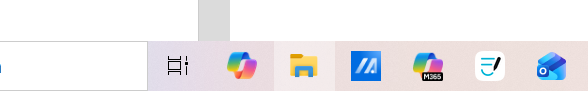
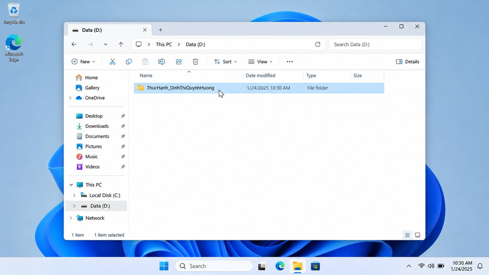
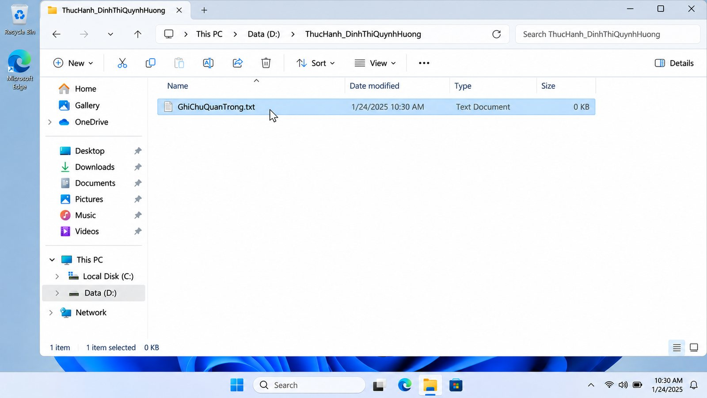
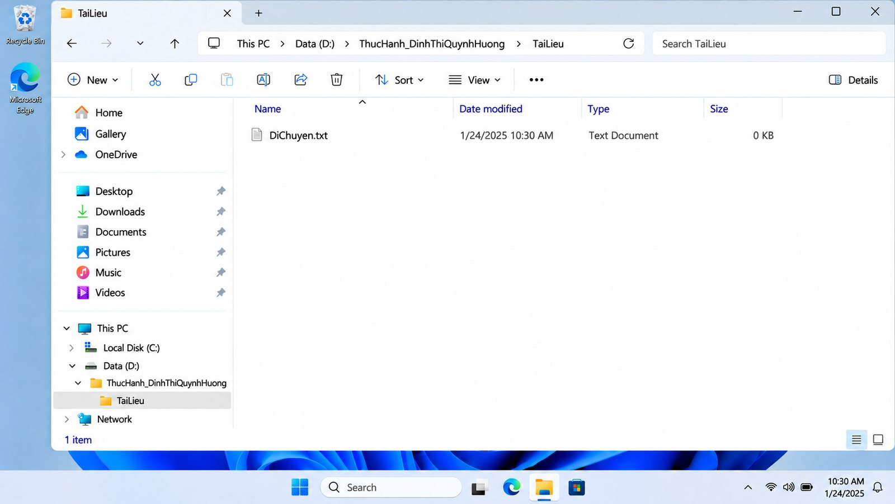
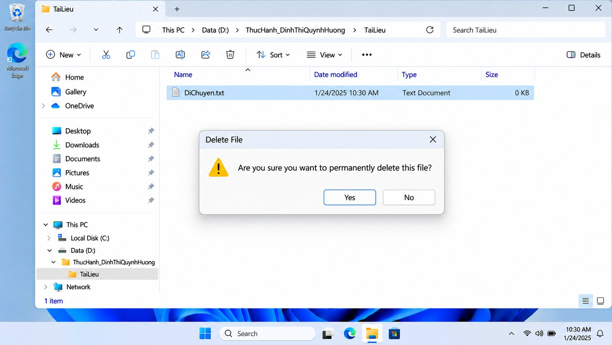

aMục tiêu bài tập
Yêu cầu
Bài thực hành 1.4 – Bài tập 1: thực hiện tuần tự các thao tác cơ bản với tệp tin và thư mục trên hệ điều hành, gồm tạo thư mục và tệp, đổi tên, tạo thư mục con, sao chép, di chuyển, xóa vào Thùng rác và xóa vĩnh viễn; chụp ảnh minh chứng sau mỗi bước.
Mục tiêu mình đặt ra: thao tác thành thạo và hiểu rõ bản chất từng thao tác quản lý dữ liệu, làm nền cho việc tổ chức tài liệu học tập (giáo án, bản nhạc, tệp ghi âm) gọn gàng, dễ tìm lại.
Môi trường thực hành
Máy tính cá nhân chạy Windows, công cụ File Explorer mặc định; vị trí thực hành ở ổ dữ liệu D:, tệp văn bản .txt.
Kỹ năng được rèn luyện
- Tạo, đổi tên tệp và tổ chức thư mục theo cấp
- Đặt tên thư mục, tệp rõ ràng, không dấu cách tùy tiện
- Phân biệt sao chép – di chuyển – xóa tạm – xóa vĩnh viễn và khả năng khôi phục của từng thao tác
- Dùng phím tắt hệ thống:
Windows+E,F2,Ctrl+C,Ctrl+X,Ctrl+V,Shift+Delete
bTóm tắt quá trình thực hiện
Các bước thực hiện
- Mở File Explorer bằng
Windows+Ehoặc biểu tượng thư mục trên thanh tác vụ, chọn This PC rồi vào ổD:để làm việc độc lập.
Hình 1. Biểu tượng File Explorer trên thanh tác vụ - Tạo thư mục chính: chuột phải → New → Folder, đặt tên theo quy ước
ThucHanh_hotensinhvien→ThucHanh_DinhThiQuynhHuong, rồi mở thư mục.
Hình 2. Thư mục thực hành đã tạo trong ổ D: - Tạo và đổi tên tệp: New → Text Document tạo
GhiChu.txt; chọn tệp, nhấnF2(hoặc Rename) đổi thànhGhiChuQuanTrong.txt.
Hình 3. Tệp GhiChuQuanTrong.txt sau khi đổi tên - Tạo thư mục con
TaiLieubên trong thư mục chính để thiết lập cấu trúc phân nhánh.Hình 4. Thư mục con TaiLieu cạnh tệp đã đổi tên - Sao chép
GhiChuQuanTrong.txt(Ctrl+C), mởTaiLieu, dán (Ctrl+V): có bản sao trongTaiLieu, tệp gốc vẫn ở thư mục chính. - Di chuyển: tạo
DiChuyen.txtở thư mục chính,Ctrl+X(biểu tượng tệp mờ đi) rồiCtrl+VtrongTaiLieu: tệp rời hẳn vị trí cũ.Hình 5. Hai tệp trong TaiLieu sau thao tác sao chép và di chuyển - Xóa vào Thùng rác: trong
TaiLieu, chọn bản saoGhiChuQuanTrong.txtvà nhấnDelete; tệp chuyển vào Recycle Bin.
Hình 6. Sau khi xóa tạm, TaiLieu chỉ còn DiChuyen.txt - Xóa vĩnh viễn: chọn
DiChuyen.txt, nhấnShift+Delete; hộp thoại “Are you sure you want to permanently delete this file?” hiện ra, chọn Yes. Tệp bị xóa mà không qua Thùng rác.
Hình 7. Hộp thoại xác nhận xóa vĩnh viễn (Shift+Delete)


Công cụ đã sử dụng
| Công cụ | Dùng để làm gì | Vì sao chọn |
|---|---|---|
| File Explorer (Windows) | Thực hiện toàn bộ thao tác tạo, đổi tên, sao chép, di chuyển, xóa | Công cụ quản lý tệp mặc định của Windows, có sẵn trên máy, đúng yêu cầu bài |
| Phím tắt hệ thống | Windows+E, F2, Ctrl+C/X/V, Delete, Shift+Delete | Thao tác nhanh, chính xác hơn so với dùng chuột |
| Công cụ chụp màn hình | Ghi minh chứng sau mỗi bước | Để đối chiếu vị trí tệp trước và sau thao tác |
Ghi nhận sử dụng AI
Báo cáo bài này không ghi nhận sử dụng công cụ AI: toàn bộ thao tác và ảnh chụp do mình tự thực hiện trên máy.
Khó khăn và cách giải quyết
| Khó khăn gặp phải | Cách giải quyết |
|---|---|
Sao chép và di chuyển cùng kết thúc bằng Ctrl+V nên dễ nhầm kết quả. | Sau mỗi thao tác kiểm tra lại cả thư mục nguồn và thư mục đích, rồi tổng hợp thành bảng đối chiếu (mục c). |
Shift+Delete bỏ qua Thùng rác nên xóa nhầm là không khôi phục được bằng Restore. | Đọc kỹ tên tệp trong hộp thoại xác nhận trước khi chọn Yes; tệp còn cần thì chỉ dùng Delete thường. |
| Tên thư mục có dấu tiếng Việt và dấu cách dễ gây lỗi đường dẫn, khó gõ. | Đặt tên không dấu, viết hoa chữ cái đầu mỗi từ, nối bằng dấu gạch dưới: ThucHanh_DinhThiQuynhHuong. |
Bài học rút ra
Sao chép phù hợp khi cần giữ bản ở vị trí ban đầu, di chuyển phù hợp khi cần đổi nơi lưu. Mình sẽ giữ thói quen đặt tên thư mục rõ ràng theo cấp, không để tệp bừa bãi ở Desktop hay Downloads, và luôn kiểm tra kỹ trước khi xóa vĩnh viễn. Cách tổ chức này dùng được ngay cho kho bản nhạc, tệp ghi âm và giáo án của ngành Sư phạm Âm nhạc.
cSản phẩm cuối cùng
Cấu trúc thư mục thực hành, quy tắc đặt tên, bảng đối chiếu thao tác và báo cáo PDF đầy đủ.
Cấu trúc thư mục
D:\
└── ThucHanh_DinhThiQuynhHuong\
├── GhiChuQuanTrong.txt (đổi tên từ GhiChu.txt)
└── TaiLieu\
├── GhiChuQuanTrong.txt (bản sao → sau đó xóa vào Thùng rác)
└── DiChuyen.txt (di chuyển từ thư mục chính → sau đó xóa vĩnh viễn)
Quy tắc đặt tên
| Thành phần | Quy ước | Ví dụ |
|---|---|---|
| Mục đích | Từ đầu tên cho biết thư mục dùng để làm gì | ThucHanh |
| Chủ sở hữu | Họ tên không dấu, viết hoa chữ cái đầu mỗi từ | DinhThiQuynhHuong |
| Phân cách | Dấu gạch dưới, không dùng dấu cách | ThucHanh_DinhThiQuynhHuong |
| Nội dung tệp | Tên mô tả nội dung, không dấu | GhiChuQuanTrong.txt, TaiLieu |
Bảng đối chiếu kết quả
Kiểm tra thư mục nguồn, thư mục đích và Thùng rác để phân biệt bốn thao tác:
| Thao tác | Cơ chế trên hệ điều hành | Vị trí nguồn | Vị trí đích / khả năng khôi phục |
|---|---|---|---|
Sao chép (Ctrl+C → Ctrl+V) | Tạo một bản dữ liệu mới, cấp định danh tệp mới | Vẫn còn tệp gốc | Có thêm bản sao trong TaiLieu; bản sao độc lập với tệp gốc |
Di chuyển (Ctrl+X → Ctrl+V) | Cập nhật đường dẫn của tệp (cùng ổ đĩa) | Tệp rời vị trí cũ | Tệp xuất hiện trong TaiLieu; hoàn tác bằng Ctrl+Z hoặc di chuyển ngược lại |
Xóa tạm (Delete) | Chuyển tệp vào Recycle Bin, dữ liệu chưa bị giải phóng | Tệp biến mất khỏi thư mục | Khôi phục được bằng Restore trong Thùng rác |
Xóa vĩnh viễn (Shift+Delete) | Xóa bản ghi định danh tệp, vùng lưu trữ sẵn sàng bị ghi đè | Tệp biến mất khỏi thư mục | Thùng rác không có tệp để khôi phục; chỉ có thể thử cứu bằng phần mềm chuyên dụng |
Báo cáo bài tập
Báo cáo PDF gồm nhật ký 8 công đoạn, 8 hình minh chứng và bảng đối chiếu bản chất các thao tác.